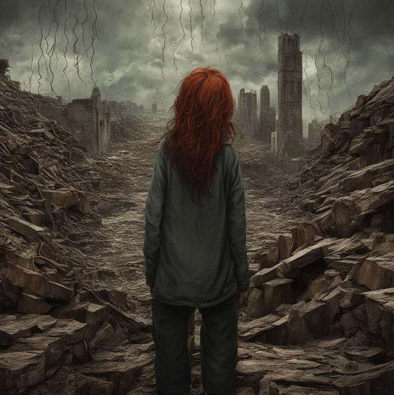
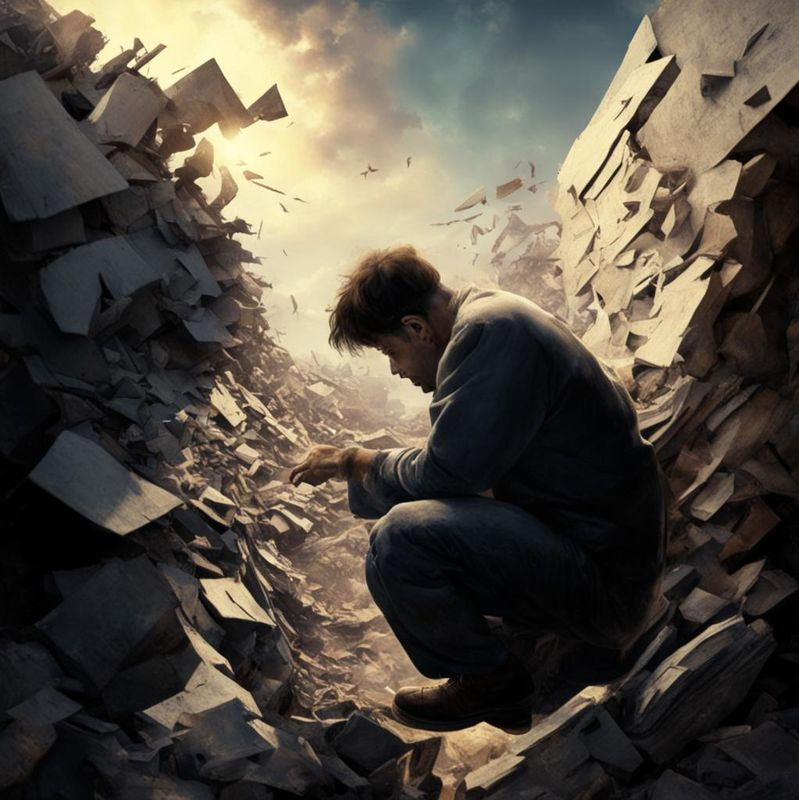
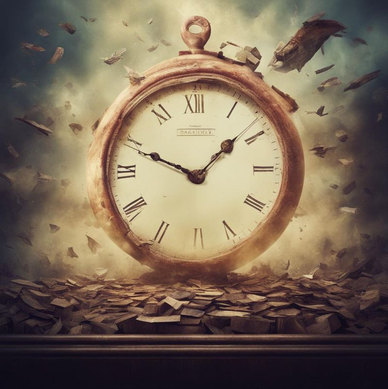
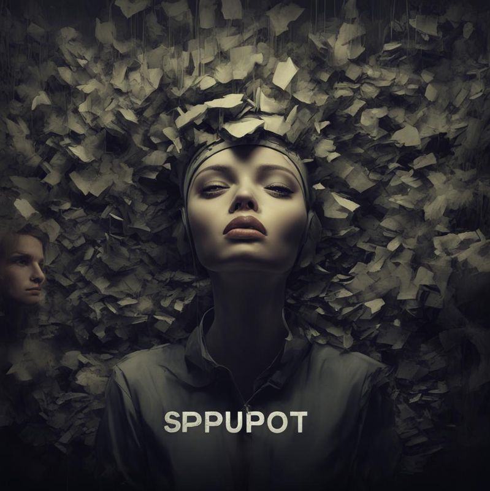
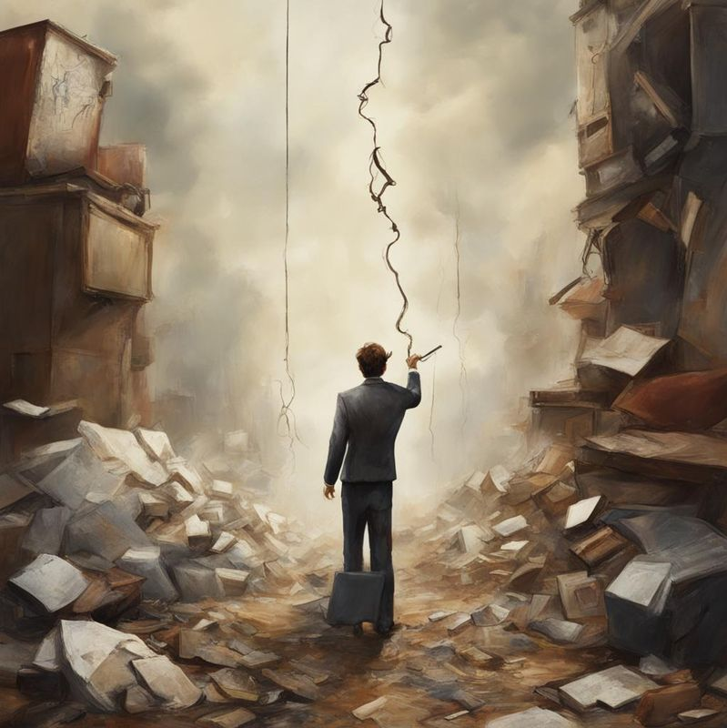
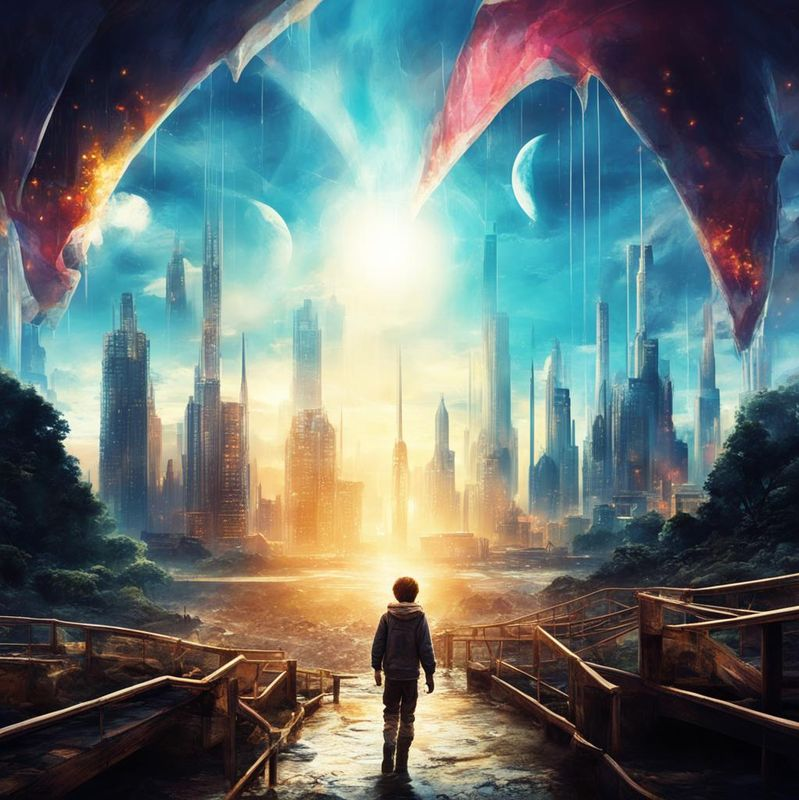

-
Фритрек и нулевой спринт: Подготовка к работе
<panic>Это было самое начало пути. На этом этапе важно было проникнуться основами и настроиться на учёбу. И, возможно, подумать, как новые знания могут повлиять на ваше будущее.
Было страшно начинать, ведь даже с описанной программой точно не знаешь, что ждет тебя впереди и справишься ли ты со всем. Для меня это было возможностью научиться новому, освежить что-то в памяти.
-
1 спринт: Я — чистый лист
<excitement>На первых этапах мы работали со страхами и сомнениями, которые часто испытывают новички. Один из них — страх перед чистым листом. Это, конечно же, намного сложнее, чем боязнь куска бумаги. Часто за этим ощущением скрываются более глубокие вопросы: с чего начать? а вдруг будет слишком сложно? что, если я не справлюсь?
Изначально не было такого страха - первые темы я знала, а вот дальше началось то, что я забыла и этот страх появился. Особенно, когда что-то не получалось и становилось страшно и думалось а смогу ли?
-
1 спринт: А если не получится?
<difficulties>Первый проект — позади! Но это всё ещё самое начало пути. Радость могла быстро померкнуть и смениться ожиданием провала. Или вы, наоборот, могли вдохновиться успехами и поверить в себя.
Когда первый проект был сдан была радость, все таки что-то вспомнила, что-то узнала и смогла применить, кроме того, лучше поняла систему учебы.
-
2 спринт: Погоня за идеалом
<deadline>На этом этапе вы уже достаточно разбирались в основах вёрстки, чтобы понять, как много ещё впереди. Вы могли попытаться погнаться за идеалом и понять, что он недостижим. А, может, вы вовсе и не подвержены перфекционизму и вместо того, чтобы сделать идеально, старались просто сделать.
В начале хотелось сделать все идеально, теория училась, практика отрабатывалась, а потом ты понимаешь, что осталось мало времени для сдачи проекта, а рядом мешает личная жизнь..и начиналась погоня за серединой - что-то между качеством и балансом времени.
-
2 спринт: О тех, кто рядом
<support>Всё это время вы были не одиноки (хотя, возможно, иногда и чувствовали, что одни против целого мира). Вас окружали одногруппники, команда сопровождения и просто близкие люди, которым можно пожаловаться, если очередной макет просто так не поддавался. Осваивать что-то новое легче, когда рядом есть единомышленники, не правда ли?
Очень вдохновляла беседа, другие ребята, которые пришли из других сфер и пытались научиться чему-то новому, это безумно вдохновляет пытаться дальше.
-
3 спринт: Обходные стратегии
<difficulties>На этом курсе вы постоянно решали разные задачи. В какой-то момент вам могло показаться, что решения просто иссякли. Значит, пришло время посмотреть на задачу под другим углом.
Некоторые задачи были трудны, иногда думалось это я на столько туплю или что-то не так с заданиям (Спойлер: тупила я), но потом со всем этим разбираешься и успокаиваешься.
-
3 спринт: Когда опускаются руки
<inspiration>Во время учёбы часто возникает чувство, когда не знаешь, за что хвататься. Вроде и проектную пора сдавать, и задачи хочется порешать, и в теории получше разобраться, и жизнь не забыть пожить. В такие моменты очень нужна концентрация. Вспомните, откуда вы её черпали.
Пыталась строить дедлайны, планы, расписания, чтобы все-все успеть и ничего не забывать, но все таки обстоятельства бывают разные и они сбивали режим. Как минимум установка уже начало положено, это необходимо и хочется брало верх.
-
«Сейчас я здесь»
<miracle>Сейчас вы уже очень много знаете о вёрстке. Но это только начало. Во-первых, впереди ещё много материала про «красотищу». Во-вторых, с окончанием курса учёба не заканчивается. Вёрстка — это целый мир. И этот мир постоянно меняется. Познать его полностью не получится, но это тот случай, когда важен сам процесс познания. Ведь часто путь — и есть результат.
Впереди еще много нового и это новое пугает даже куда больше, чем начало обучения))